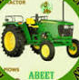

Home
Library Resources
Databases
E-Books
E-Journals
About us
Quick information
Our services
Contact us
E-Books
Mechatronics Engineering Technology Department
Mechatronics Engineering Technology
Mechatronics Engineering and Electrical Engineering
Mechatronics Future, Challenges and Solutions
Recent Developments in Mechatronics
Hospitality Management Department
Hospitality Management
Tourism and Hospitelity Management
Human Resource Management
Geological Technology Department
Basic Geology
Mineralogy
Petrology
Agric.and Bio-environmental Engineering Tech. Departmentt

Introduction to Agric.and Bio-environmental Engineering Tech.
Farm Power
Irrigation and Drainage
Soil and Water Conservation
Artificial Intelligence Department
Computer Architecture
Python Programming Language
Artificial Intelligence
Theories of Computation & Algorithm
Mathematics & Statistics for AI
Ethical & Professional Practice in AI
Machine Learning
Computer Vision
Data Science for AI
AI Development Framework
Neural Computation & Bioinformatics
Neural Language Processing
Research Methodology in Artificial Intelligence
Deep Learning
Soft & Quantum Computing
AI Computing solutions
AI Project Management
Network Security for AI
Robotics & Intelligent Systems
Web & Mobile Application Development
Metallurgical Engineering Technology Department
Corrosion
Foundry
Mechanical metal
Physical Metallurgy
Research in metallurgy
Welding
Art and Design Department
Graphics1
Graphics2
Textile
Ceramics
Sculpture
Painting
Surveying and Geo-Informatics Department
Introduction to Science and Laboratory Tech
More on science Laboratory Technology
more E-Books